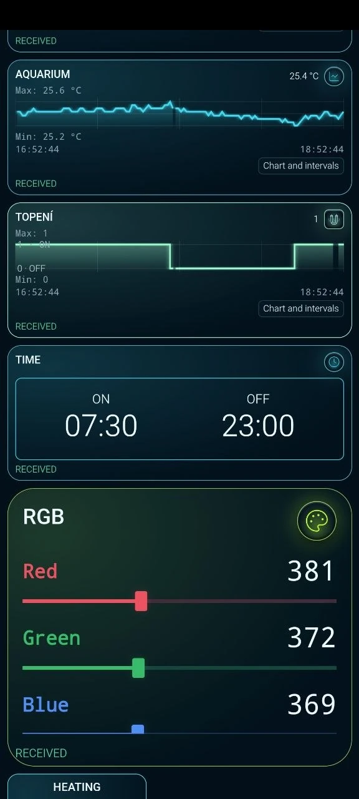
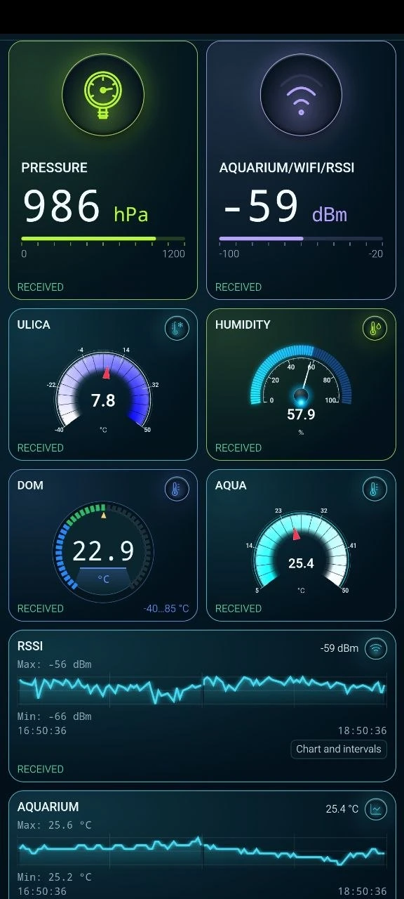
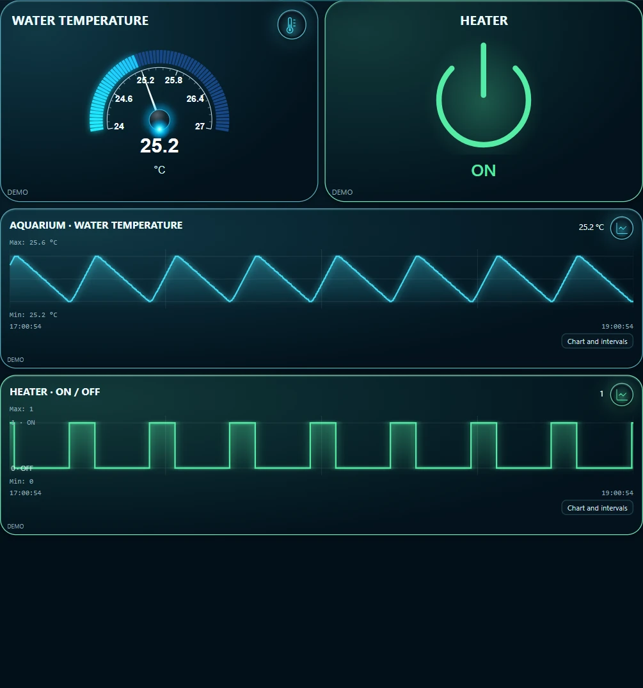

Teplota vody a spínání topení v akváriu na tabletu
Teploměr ukazuje 25,4 °C. Jak se voda na tuto teplotu dostala? Dejte vedle sebe dva grafy za stejné dvě hodiny: teplotu vody a stav topení.
Panel skutečného akvária
Od 16:52 do 18:52 se teplota vody pohybovala mezi 25,2 a 25,6 °C. Na schodovité křivce je vidět, kdy panel přijal stav zapnuto a kdy vypnuto. Vyberte okamžik sepnutí a sledujte, jak se potom mění sklon teplotní křivky.




Vyzkoušejte si panel bez akvária
Potřebujete počítač s Pythonem 3, telefon nebo tablet s ARAAMA a MQTT broker v místní síti. Pro odesílání zpráv nainstalujte klienta Mosquitto a ověřte, že v terminálu funguje příkaz mosquitto_pub. Archiv obsahuje generátor a hotový panel se dvěma aktuálními hodnotami a dvěma grafy. Časový plán a ovládání RGB patří ke skutečnému systému.
Stáhnout generátor a panel (ZIP)
První zpráva bez brokeru
Rozbalte ZIP, otevřete terminál v rozbalené složce a spusťte následující příkaz. Vypíše téma a jednu zprávu a skončí.
python simulate.py --count 1
lab/aquarium/state {"water_temperature_c":25.52,"heater_on":1}Přenos hodnot do tabletu
Místo ukázkové adresy zadejte adresu svého brokeru. Nechte terminál otevřený. Generátor odesílá obě hodnoty každých pět sekund. Pokud broker vyžaduje heslo, nastavte přístupové údaje v místní konfiguraci mosquitto_pub i v ARAAMA.
python simulate.py --host 192.168.1.20
V ARAAMA si nejprve exportujte stávající projekt. V Nastavení → Projekty otevřete panel.json a v nastavení sítě nahraďte broker.example adresou téhož brokeru. Spusťte panel a porovnejte hodnoty s výpisem v terminálu.
Jak číst průběh ohřevu
Teplota v °C se čte z pole $.water_temperature_c, stav topení z $.heater_on (1 pro zapnuto, 0 pro vypnuto). Oba grafy zobrazují stejné dvě hodiny. Model začíná se zapnutým topením. Při 25,6 °C topení vypne a při 25,2 °C je opět zapne. Rychlost ohřevu i ochlazování se mění postupně. První vypnutí uvidíte zhruba za minutu. Tyto meze patří k simulaci. Generátor pouze odesílá hodnoty a neovládá žádné zařízení.

Generátor ukončíte pomocí Ctrl+C. Pro ruční sestavení vyberte obě pole ve vyhledávání MQTT, uložte každé jako tag a použijte je pro ukazatel i graf. Hotový panel je ověřen ve verzi 0.1.10. Pro malé MQTT projekty je k dispozici také odlehčená 0.1.5.